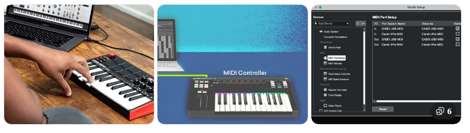
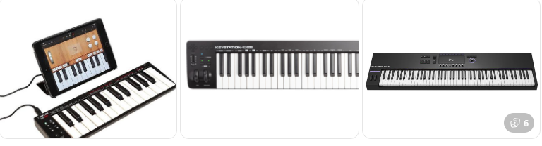

대신 다음과 같은 “연주 정보”를 컴퓨터로 전달합니다.
어떤 음을 눌렀는지 (Pitch)
얼마나 세게 눌렀는지 (Velocity)
얼마나 길게 눌렀는지
노브, 휠 등의 움직임
이러 정보들 DAW(큐베이스 등)와 가상악기(VSTi)를 통해
최종적으로 소리로 변환됩니다.
[미디건반의 종류] (건반 수 기준)

연주에는 한계 있음
추천: 비트메이킹, 입문자
49건반 가장 많이 사용되는 표준형
기본적인 양손 연주 가능
61건반 연주 + 작업 모두 가능 실용적인 선택
추천: 본격적인 음악 작업
88건반 실제 피아노와 동일
무게와 공간 부담 큼
[연결 방식]
USB 연결 → 가장 일반적, 바로 사용 가능
MIDI DIN → 외부 장비 연결 시 사용
[DAW에서의 역할]
미디건반은 DAW에서 다음과 같이 작동합니다:
MIDI 트랙 생성
입력: 미디건반
출력: 가상악기(VSTi)
[핵심:]
건반 = 연주
DAW = 기록
VST = 소리
[최종 핵심 정리]
미디건반은 악기가 아니라
“연주 정보를 입력하는 컨트롤러”
좋은 음악은
미디건반이 아니라 “연주 + 가상악기 + 편곡”에서 결정된다
닫기 ×